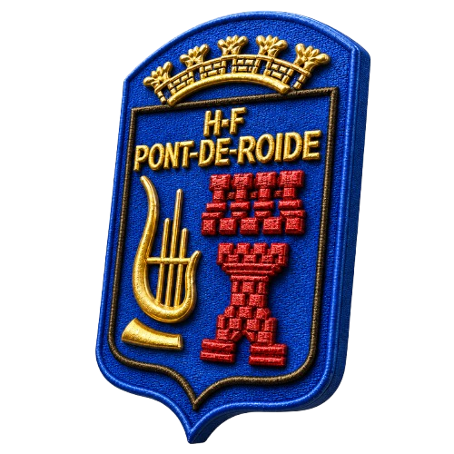

L'Harmonie Fanfare Rudipontaine réunit musiciens passionnés et élèves talentueux autour d'une même vocation : faire vivre la musique dans notre région du Doubs.
Retrouvez-nous lors de nos prochaines manifestations musicales
Concert exceptionnel dans la magnifique salle du Grand Kursaal de Besançon. Entrée libre.
Commémoration de la Victoire du 8 Mai 1945. Cérémonie patriotique avec défilé.
Animation musicale lors du Salon des Vins de Villars-sous-Dampjoux.
Vendredi 08 Mai 2026
de 20h00 à 22h00 - Salle Georges Contal
Retrouvez les informations publiques et annonces du comité directement sur le site.
Retrouvez toute notre actualité, photos et vidéos en temps réel.
Notre page FacebookL'Harmonie Fanfare Rudipontaine est née en 1922 lorsque des musiciens de Terre-Blanche, Valentigney et Pont de Roide se sont réunis pour vivre leur passion commune. Initialement « Fanfare des Usines Peugeot », elle est devenue le cœur musical de Pont de Roide-Vermondans.
Depuis 2025, l'association est conduite par François-Xavier Tafanelli à la direction et Anthony Merique à la présidence.
Cours de solfège et d'instruments pour tous niveaux, par des professeurs certifiés.
Un orchestre dédié aux jeunes musiciens en formation avant de rejoindre l'harmonie.
Découvrez les 38 musiciens qui font vibrer l'harmonie lors de chaque concert.
Marches, classique, variétés, cinéma... Un répertoire riche et varié pour tous les publics.
Revivez nos meilleurs moments à travers la galerie photo et les articles de presse.
Que vous soyez musicien expérimenté ou débutant, l'Harmonie vous accueille. Inscriptions à l'école de musique ouvertes toute l'année.